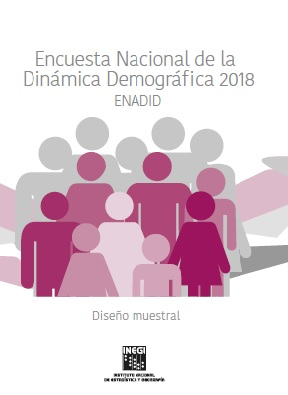

México. ¿México?
Presentación.
Mediante este posteo inauguro un espacio donde pretendo compartir reflexiones e ideas varias relacionadas al mundo de R, código abierto, procesamiento de datos, (con suerte) algo de sociología, tips y alguna que otra yerba útil.
Como tema inaugural (y como excusa) emprendí un trabajo para intentar conocer y caracterizar lo que a partir de este año será, por un lado, mi país de residencia, y por el otro (justito), el país en el que mi querida Argentina enfrentara en la fase de grupos del mundial de fútbol masculino 2022: México. La idea es, entonces, conocer un poco más de este (ya) bello país, todo a través de información estadística. En este primer paso voy a indagar sobre su población, buscando qué cuentan los principales indicadores sociodemográficos.
Fuente de datos.
Para poder comenzar a responder estas preguntas hice lo que toda persona que trabaja con datos (de bien) suele hacer: buscarlos. Y qué mejor forma que ir a la fuente de todas las fuentes, al centro de producción estadística que la mayoría de los países tienen para contar (al menos de forma cuantitativa) cómo es su población, su economía, etc. En México este organismo se llama Instituto Nacional de Estadística y Geografía (de ahora en más INEGI)
El INEGI es una institución modelo en Latinoamérica en cuanto a producción de información estadística. La cantidad de datos que produce, procesa y difunde es extremadamente rica y abarca un sinfín de temáticas vinculadas a la sociología, demografía, economía, salud, educación, etc., etc., etc.
Surfeando en este mar de información, me encontré con una, por momentos, inabarcable cantidad de recursos que parecen podrían ayudar a dar respuesta a las preguntas que me estaban dando vueltas. La más llamativa (¡muy gratamente!): el Censo 2020. En la página podemos ver que el operativo ya se encuentra en etapa de difusión de la información a través de tabulados pre-procesados (genial), pero no se dispone de una base de microdatos para generar información a medida (no tan genial)1, al menos para aquellas variables que necesito. Vale decir que esto no es algo sencillo de lograr para ninguna Oficina de Estadística en ningún lugar del planeta. Estas suelen tomarse su tiempo para disponibilizar este tipo de recursos, si es lo llegan a hacer (hola REDATAM👋).
Esta fue la principal razón por la que empecé a buscar (también en el INEGI) alguna fuente que me permita hacer cruces más bien quisquillosos, digamos. ¡Y lo logré! Me encontré con la (escuchen qué bien suena) Encuesta Nacional de la Dinámica Demográfica 2018 (de ahora en adelante ENADID) -chusmead aquí-, cuyos principales objetivos son los de proporcionar información estadística relacionada con el nivel y comportamiento de los componentes de la dinámica demográfica: fecundidad, mortalidad y migración (interna e internacional); así como otros temas referidos a la población, los hogares y las viviendas.
Mucho ruido y pocas nueces.
Vamos al grano, no sin antes (¿y las nueces?) puntear lo necesario para incursionar en los datos:
1. Las herramientas2
- El objetivo es obtener una base de datos y procesar la información con R. Para ello vamos a R como nuestro lenguaje de procesamiento y se podrá acá poder ver el código con el cual armo el conjunto de tablas y gráficos.
2. La fuente de información
- La base de datos se puede disponer directo de la página del INEGI
3. La metadata (la información de la información):
- Se tendrá a mano, siempre, el diccionario de registro para así saber bien a qué variables refieren las columnas y sus valores.
Primeros resultados3:
Vamos por la primera gran pregunta: ¿Cuántos habitantes hay en México?
## Warning in questionr::wtd.table(x = x_vec, y = y_vec, weights = weights_vec, :
## 'na.rm' and 'na.show' are ignored when 'useNA' is provided.
## Warning in questionr::wtd.table(x = x_vec, y = y_vec, weights = weights_vec, :
## 'na.rm' and 'na.show' are ignored when 'useNA' is provided.
## Warning in prettyNum(.Internal(format(x, trim, digits, nsmall, width, 3L, :
## 'big.mark' and 'decimal.mark' are both '.', which could be confusing
## Warning in prettyNum(.Internal(format(x, trim, digits, nsmall, width, 3L, :
## 'big.mark' and 'decimal.mark' are both '.', which could be confusing

Características de los habitantes
## Warning in questionr::wtd.table(x = x_vec, y = y_vec, weights = weights_vec, :
## 'na.rm' and 'na.show' are ignored when 'useNA' is provided.
## Warning in questionr::wtd.table(x = x_vec, y = y_vec, weights = weights_vec, :
## 'na.rm' and 'na.show' are ignored when 'useNA' is provided.
¿Cuántos de estos son extranjeros?
¿Cuántos argentinos y argentinas hay en México?
Cantidad de Argentinos en México
ANEXO METODOLÓGICO
b_total <- b_total %>%
rename(lugar_nac = p3_7) %>%
mutate(lugar_nac = case_when(lugar_nac == 1 ~ "Aquí, en este estado",
lugar_nac == 2 ~ "En otro estado",
lugar_nac == 3 ~ "En Estados Unidos de América",
lugar_nac == 4 ~ "En otro país",
lugar_nac == 5 ~ "No especificado"))
-
Vale mencionar que el organismo ofrece una muestra para probar procesamientos (cuyas estimaciones no son válidas) y luego hacer una solicitud para obtener los resultados reales. ↩︎
-
Al final del posteo, en la sección ANEXO dejaré un bloque de código con todo el proceso de limpieza y asignación de etiquetas que será necesario para tener una salida inteligible de los datos procesados ↩︎
-
Tener en cuenta para todos los resultados aquí expuestos que la información publicada refiere al año 2018 ↩︎